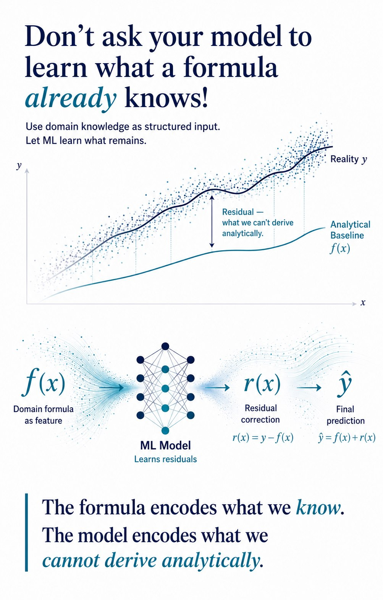

Overview
Support-case comments were available only in anonymized token form, with partial lemma recovery through a public mapping table.
Rather than pushing thousands of sparse TF-IDF columns directly into the main structured model, the text pipeline was trained separately and its output was converted into a single numeric feature.
Architecture

The Core Idea
Sparse text and dense tabular features do not always belong in the same representation space.
So the text was summarized by its own small model first, then injected into the main model as a meta-feature.
The text model’s confidence became one structured signal.
Selected code snippet
nlp_score <- predict(nlp_xgb, tfidf_matrix)
abt$nlp_score <- nlp_score
Why this mattered
- avoided flooding the main model with thousands of sparse columns
- let the text model specialize on textual signal first
- kept the final feature set compact and interpretable
- acted like feature-level stacking instead of raw feature concatenation
Where this pattern generalizes
- support operations with notes or comments
- claims and ticket classification systems
- tabular models augmented by unstructured text
- small to medium datasets where sparse-text inflation is risky
Key Takeaway
I turned the text model into one feature.